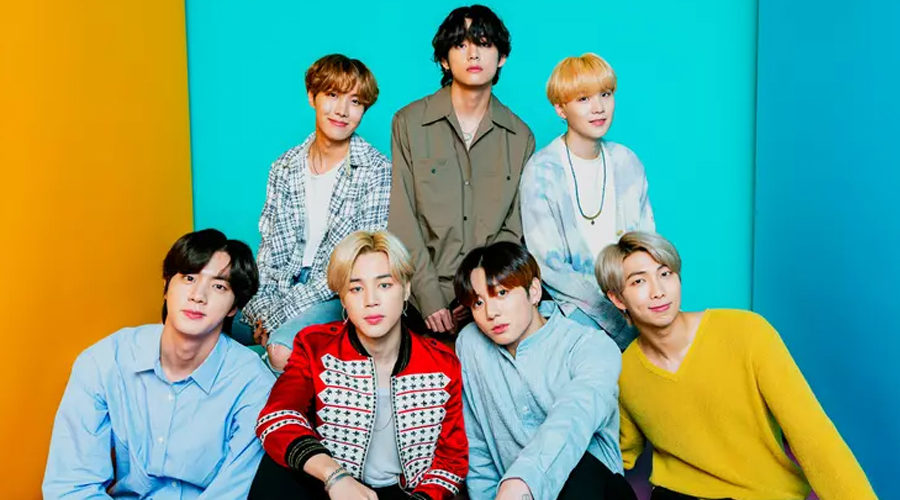
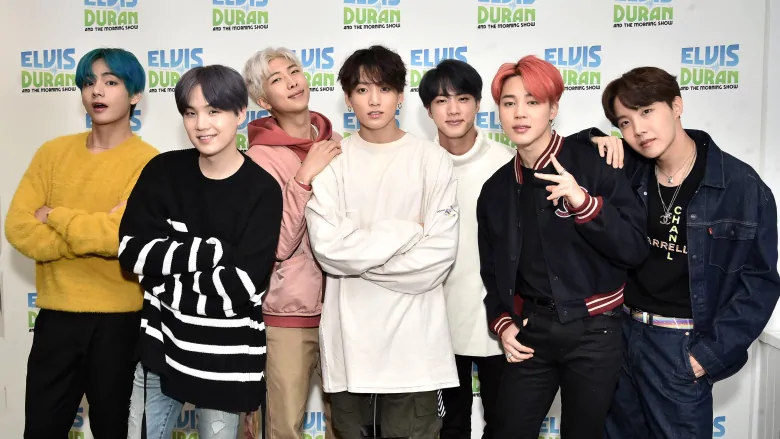
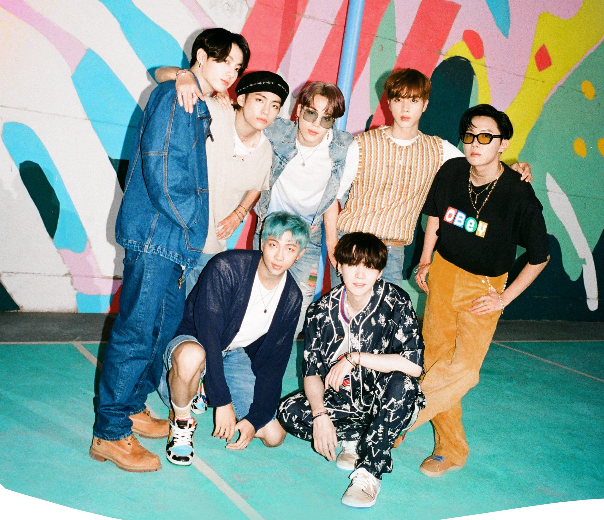

I really dont know why but this combination in the morning is just such a booster for me ,not for all mornings mind you...I could easily get sick of eggs so its reserved for mornings when I feel like that I would need a mood booster.

Whether hardcopy or sofycopy,I get hard over a good story because stories are imaginative.I prefer to the fiction genre because it encourages the reader to create the worlds inside their heads and be a part of that world.
Of late I am reading chinese translated novels .There are many genres including wuxia , xianxia, xianhua which focus on martial arts and others which in them they have different tags like ancient chinese,mecha ,harem etc.To be honest I dont like harem stories ...I mean one man with multiple wives? or one woman with multiple husbands? I mean why?I get that some characters have alot of power and want to spread their seed so that their many generations have some of tha power but I mean??Dont even get me started:(
I also love an author whom goes by the pen name JD.ROBB.She writes the most captivating series of murder-mystery books called the In Death series .Started reading them in high school and now I've got a hard and softcopy collection of all her books at home.

Now when it comes to the topic of music,I sometimes don't know which group I fit in because I listen to most of the genres from hiphop to pop to jazz to RnB to LoFi to EDM to reggae to country music.Music generally is a balm to the soul.It could fill in and make up the soundtracks to our lives.Because most of the times I could relate a section of a period of my life and relate it to a certain song or genre of music that I was listening to very frequently and it would take me back and reflect on it.
I am now listening to this K-pop group called BTS and I think they might be it for me. You know those songs that you'll listen to even when you're almost gone ? Yeah that one. Its a band of 7 very talented,charming South Korean men who introduced colour into my life because they literally opened my eyes to many things that I was previously blind to and showed me how to live and love better.To be honest I think finding them was either fate or just luck because I happen to believe in the supernatural...well some bits of it or I could just say that it was a timely coincidence.I still listen to other music now and then but their music is just that..a balm to my soul.I could go on about them but I really need to finish up this project .
 Oh..as I am writing this thay are about to release a new single this month on August 21 called Dynamite ... I am really looking forward to it .
